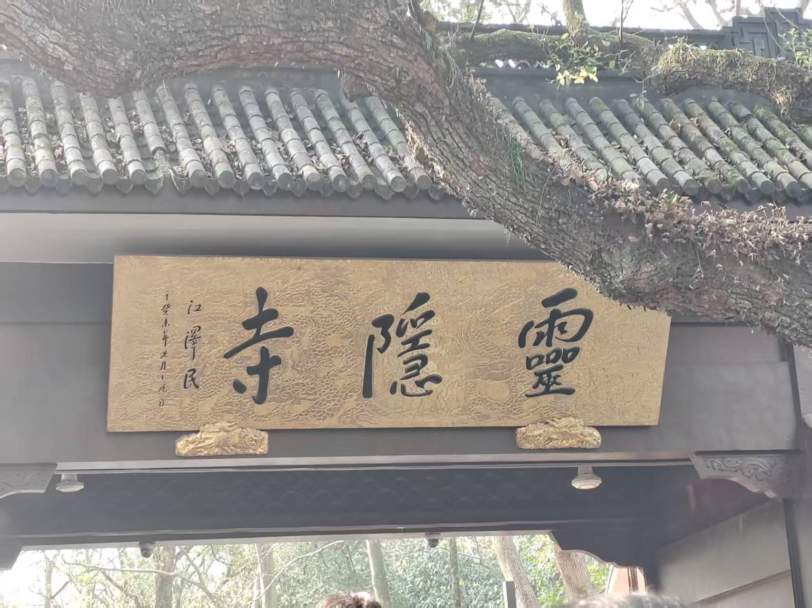
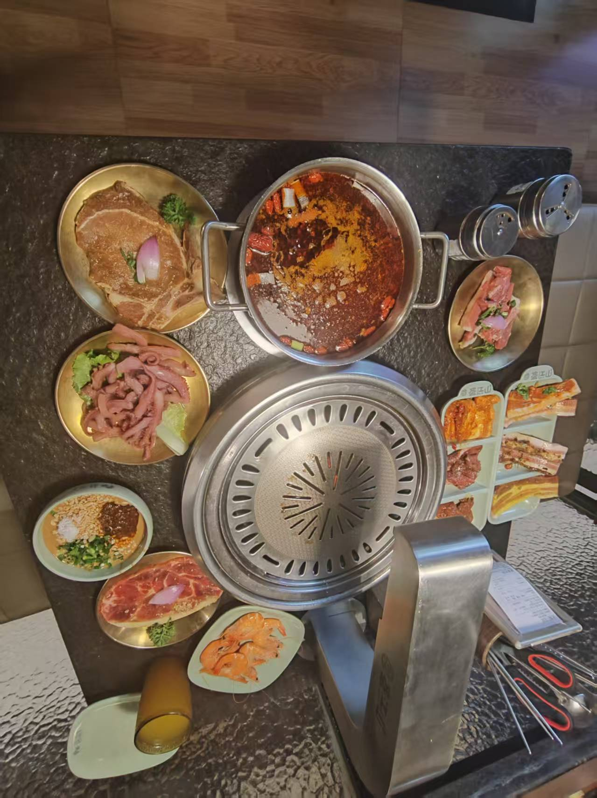

生活点滴
工作之余的精彩生活
兴趣爱好
阅读
喜欢阅读技术书籍和科幻小说，探索新知识。最近在读《三体》和《深入理解计算机系统》
摄影
用镜头记录生活中的美好瞬间，偏爱风光和人文摄影。装备：索尼A7M3
徒步
享受大自然，探索城市周边的美景。每月至少一次远足活动
下棋
培养战略思维，享受博弈的乐趣。同时在学习围棋，目前入门级水平
生活随笔
周末徒步
2024年3月15日
上周末和几个好友一起去了黄山，感受大自然的鬼斧神工。清晨的云海尤其震撼，站在山顶俯瞰云海翻滚，犹如置身仙境。此行不仅锻炼了身体，更让心灵得到了洗涤。
读书分享
2024年3月1日
每月一次的读书分享会，这次讨论了《人类简史》，从不同角度看待人类文明的发展。书中关于认知革命的观点特别有趣，引发了大家热烈的讨论。通过交流，获得了很多新的见解。
技术与生活
2024年2月20日
最近在思考技术与生活的平衡。作为一名工程师，既要保持对技术的热情，也要享受生活的美好。找到这个平衡点很重要，它能让我们在追求专业成长的同时，不忘生活的诗意。
生活感悟
2024年2月10日
和棋友们的定期聚会，不仅是切磋技艺的时光，更是交流人生感悟的机会。围棋如人生，有得有失，关键是保持平和的心态，享受过程。
旅行足迹
2024年3月
黄山之行
徒步登山，观云海日出，感受黄山奇松怪石。
2024年1月
北京冬季之旅
游览故宫、长城，体验北方冬季的独特魅力。
2023年10月
杭州西湖
漫步西湖，品茶赏月，感受江南水乡的诗意。
照片墙
4张

3张

6张

4张
3张
"生活不止眼前的代码，还有诗和远方。"